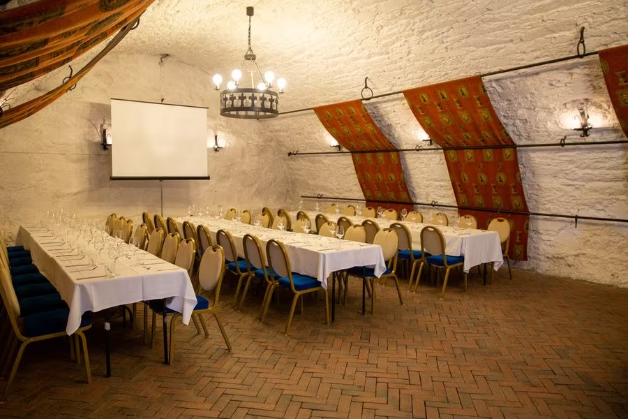
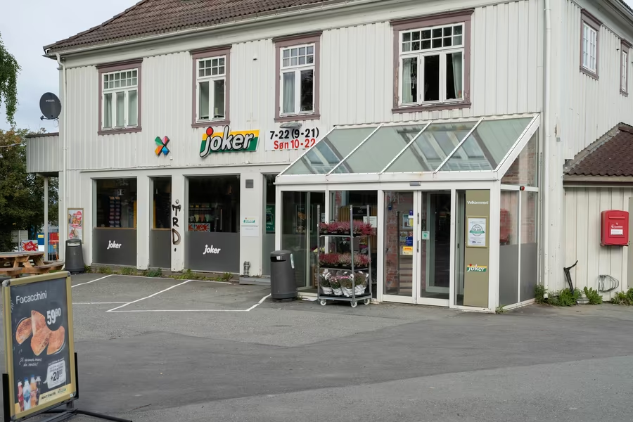

Restauranter
Hvis du føler deg sulten etter å ha gått en lang tur til festningen har du sjansen til å mette deg hos en av disse restaurantene som ligger veldig nært festningen!
- Restaurant Kommandanten
- Sabrura
- Rive Gauche
- Kalas & Canasta
- Bakklandet Skydsstation

Dette rommet som var kommandantboligen før har blitt Restaurant Kommandanten Kommandanten
Butikker
For å kjøpe noen snacks til din tur på festningen kan du handle hos disse nærliggende butikkene.
- Rema 1000 Rosenborg
- Joker
- Nærbutikken Møllenberg

Butikken som er nærmest Festningen er Joker. Det tar bare 5 minutter å gå dit.
Hoteller
De som liker å ta seg en tur på kveldene kan få mest nytte ut av måneskinnet ved å overnatte hos en av de nærliggende hotellene.
- Nidaros Pilegrimsgård
- Singsaker Sommerhotell
- Scandic Bakklandet

Pilegrimsgården tilbyr mange fine utsikter til både Nidelven, Gamle Bybro og Bakklandet.